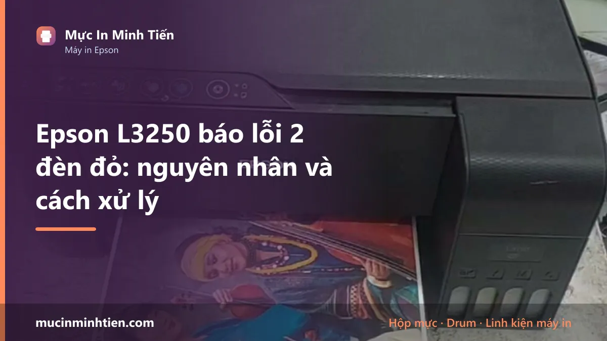
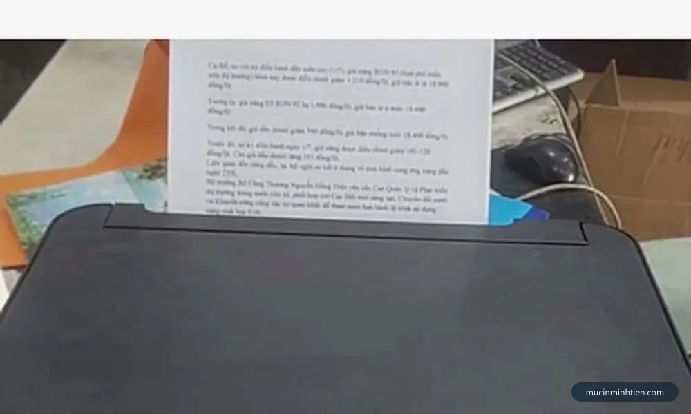
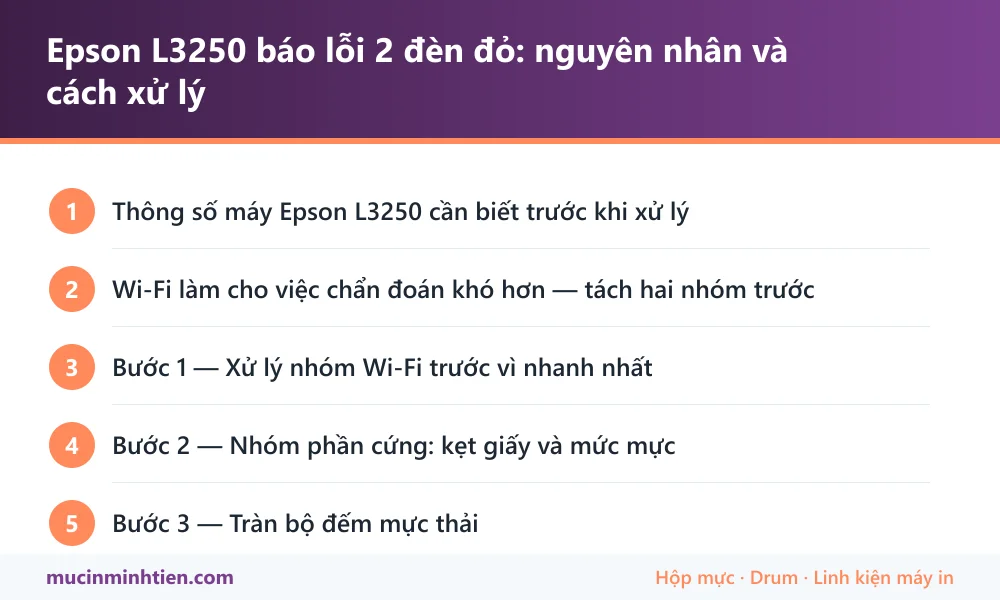

Epson L3250 báo lỗi 2 đèn đỏ: nguyên nhân và cách xử lý

Epson L3250 nháy 2 đèn đỏ do kẹt giấy, chưa xác nhận mức mực sau khi châm, tràn bộ đếm mực thải hoặc tắc đầu phun. Riêng dòng này có Wi-Fi nên còn một nhóm nguyên nhân nữa mà L3210 không có: lỗi kết nối mạng khiến máy nhấp nháy dù phần cứng hoàn toàn bình thường.
Thông số máy Epson L3250 cần biết trước khi xử lý
Biết đúng máy mình đang dùng loại nào giúp khỏi mua nhầm vật tư và khỏi làm theo hướng dẫn của dòng khác.
| Hạng mục | Chi tiết |
|---|---|
| Kiểu máy | Đa năng — in, scan, copy |
| Kết nối | USB và Wi-Fi — in được từ điện thoại |
| Mực dùng | Epson 003 — dùng chung với L3110, L3210, L1110 |
| Bản không Wi-Fi | Chính là L3210, mọi thứ khác giống hệt |
| Màn hình | Không có, đọc lỗi qua tổ hợp đèn |
Wi-Fi làm cho việc chẩn đoán khó hơn — tách hai nhóm trước
Trên L3250, đèn nháy có thể đến từ hai thế giới hoàn toàn khác nhau: phần cứng của máy, hoặc kết nối mạng. Xử lý nhầm nhóm là mất cả buổi.
Phép thử tách nhóm, mất hai phút: cắm cáp USB trực tiếp từ máy tính vào máy in, rồi in thử một trang.
- In qua USB được, qua Wi-Fi không được → phần cứng máy in hoàn toàn tốt, vấn đề nằm ở mạng. Không cần tháo máy.
- Cả USB lẫn Wi-Fi đều không in được → lỗi phần cứng thật, đi tiếp các bước bên dưới.
Rất nhiều ca chúng tôi nhận là máy hoàn toàn bình thường, chỉ do đổi router hoặc đổi mật khẩu Wi-Fi khiến máy mất kết nối và nhấp nháy đèn.
Bước 1 — Xử lý nhóm Wi-Fi trước vì nhanh nhất
Nếu phép thử USB cho thấy máy in tốt, làm ba việc sau theo thứ tự:
- Khởi động lại router và máy in, đợi máy in tự kết nối lại khoảng một phút.
- Kết nối lại Wi-Fi bằng nút WPS: giữ nút Wi-Fi trên máy in khoảng năm giây, rồi bấm nút WPS trên router trong vòng hai phút.
- Kiểm tra máy in và máy tính có cùng dải mạng không — nhà có nhiều Wi-Fi hoặc bộ mở rộng sóng rất hay gây lệch dải.
Nếu vừa đổi router hoặc đổi mật khẩu, gần như chắc chắn phải kết nối lại từ đầu — máy in không tự cập nhật mật khẩu mới.

Bước 2 — Nhóm phần cứng: kẹt giấy và mức mực
Khi cả USB cũng không in được, quy trình giống các máy cùng dòng L.
- Tắt máy, rút điện, soi đèn dọc đường giấy từ khay sau ra khe trước.
- Gỡ mảnh giấy theo chiều giấy đi, kiểm tra kỹ vùng dưới cụm đầu phun.
- Lau con lăn nếu bám bụi giấy trắng.
- Nếu vừa châm mực: đặt lại mức mực bằng Epson Printer Utility trên máy tính, hoặc giữ nút giọt mực khoảng năm giây.
- In Nozzle Check để kiểm tra đầu phun, thiếu màu thì chạy Head Cleaning tối đa ba lần.
Thứ tự vệ sinh đầu phun sao cho tốn ít mực nhất có ở bài vệ sinh đầu phun máy in Epson.
Bước 3 — Tràn bộ đếm mực thải
Giống mọi máy dòng L: máy đếm số lần xả mực vệ sinh đầu phun, đủ ngưỡng thì khoá và báo Service Required, hai đèn nháy đồng thời không dứt.
Điểm riêng của L3250: vì có Wi-Fi nên máy thường được đặt ở vị trí xa, cả nhà cùng in, tần suất sử dụng cao hơn máy chỉ cắm USB. Bộ đếm vì thế đầy nhanh hơn.
Xử lý đúng gồm hai việc làm cùng nhau — đặt lại bộ đếm và vệ sinh hoặc thay tấm thấm mực thải. Bỏ vế thứ hai thì vài tuần sau mực rỉ ra đáy máy. Cơ chế chi tiết có ở bài tràn bộ đếm mực thải Epson.
Bảng tra: dấu hiệu nào ứng với nguyên nhân nào
| Dấu hiệu | Nguyên nhân | Cách xử lý | Chi phí |
|---|---|---|---|
| In qua USB được, Wi-Fi không được | Lỗi kết nối mạng, máy in vẫn tốt | Kết nối lại Wi-Fi bằng WPS | 0 đ |
| Vừa đổi router hoặc mật khẩu | Máy in giữ mật khẩu cũ | Cài lại kết nối Wi-Fi | 0 – 100.000 đ |
| Cả USB lẫn Wi-Fi đều không in | Lỗi phần cứng | Kiểm tra giấy, mực, đầu phun | 0 – 150.000 đ |
| Đèn giấy nháy, có tiếng kéo | Kẹt giấy hoặc dị vật | Soi đèn, gỡ theo chiều giấy | 0 – 150.000 đ |
| Châm mực xong vẫn báo cạn | Chưa đặt lại mức mực | Đặt lại qua phần mềm Epson | 0 đ |
| Hai đèn nháy đồng thời, báo Service Required | Tràn bộ đếm mực thải | Đặt lại bộ đếm + xử lý tấm thấm | từ 200.000 đ |
Vật tư cho Epson L3250 có sẵn tại kho 77 Bắc Hải, Phường Diên Hồng, TP.HCM — xem bảng giá 773 mã hoặc gọi 0915 510 203 kèm model máy.
Khi nào nên gọi kỹ thuật viên
- Đã thử USB, kết nối lại Wi-Fi mà đèn vẫn nháy
- Máy báo Service Required — cần xử lý cả bộ đếm lẫn tấm thấm
- Head Cleaning ba lần vẫn thiếu màu
- Nhà có nhiều thiết bị, cần cấu hình mạng cho máy in ổn định lâu dài
- Máy đặt xa, không tiện tháo lắp kiểm tra
Báo giá xử lý Epson L3250 tận nơi
| Hạng mục | Giá tham khảo |
|---|---|
| Cài lại kết nối Wi-Fi và driver tận nơi | từ 100.000 đ |
| Kiểm tra, vệ sinh đường giấy | từ 100.000 đ |
| Vệ sinh đầu phun chuyên sâu | từ 150.000 đ |
| Đặt lại bộ đếm mực thải kèm vệ sinh tấm thấm | từ 200.000 đ |
| Châm mực 003 | từ 60.000 đ/màu |
Kỹ thuật viên kiểm tra và báo giá trước khi làm — xem cam kết ở dịch vụ sửa máy in tận nơi TP.HCM.
Cách phòng tránh tái phát
- Đặt IP tĩnh cho máy in nếu nhà hay mất điện hoặc đổi router — máy sẽ không bị lạc mạng mỗi lần khởi động lại.
- In vài trang mỗi tuần, máy Wi-Fi hay bị bỏ quên lâu hơn vì không ai nhìn thấy nó.
- Hạn chế Head Cleaning, tối đa ba lần rồi để máy nghỉ.
- Ghi lại mật khẩu Wi-Fi ở nơi dễ tìm — đổi mật khẩu là phải cài lại máy in.
- Châm đúng mực 003 và đậy kín nắp bình.
